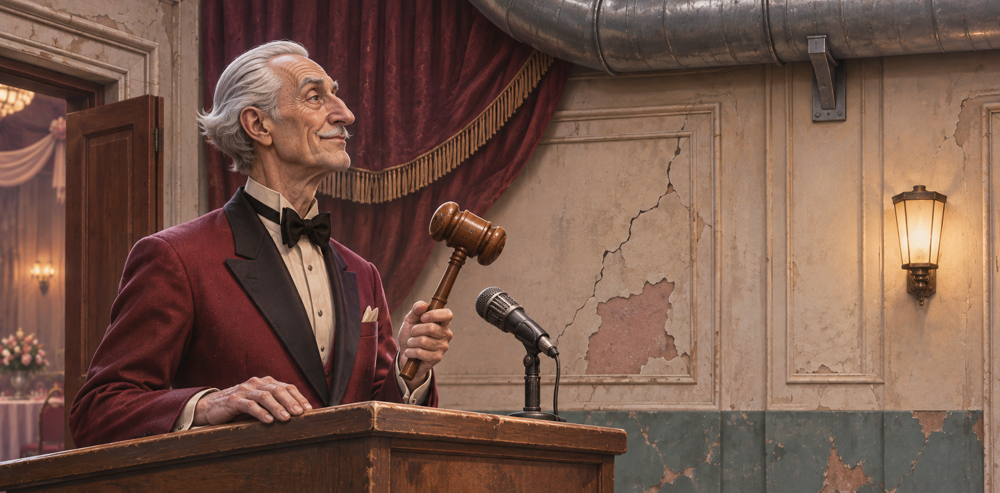
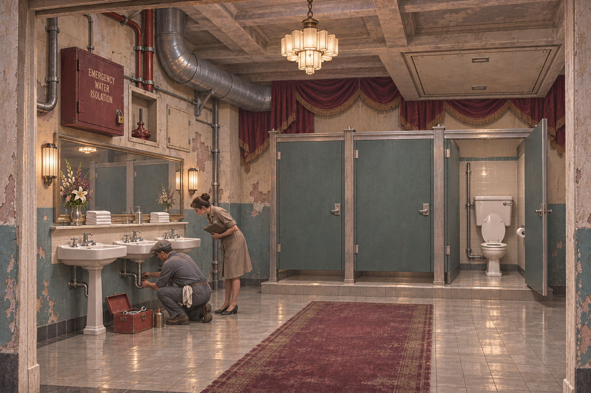
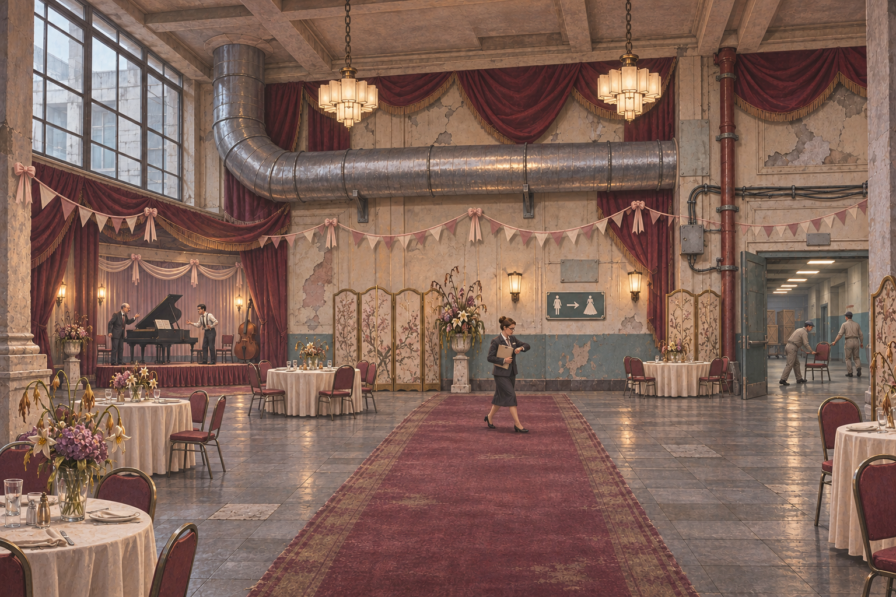

Something Old, Something Sold
Chapter 4 · Batch 1 · v01 · November 21, 2026
Generated / unselected — creative review
Five initial candidates. Detailed AI references are preserved separately from independently drawn native-grid sources. The scenes currently fall below Chapter 2 in material detail. Technical validation is not creative approval.
CH4-01 · Grand Bellevue Lobby
314×206 · RGB · v01 · generated / unselected
Candidate
Approved Chapter 2 reference
Known limitations and deviations
- Establishing entry state, before the restroom doors are removed. Later flooding, door removal and pod incidents require state-specific staging; this image is not asserted to depict every later node literally.
- Architecture and route silhouettes are clear. The tiled floor, panels and duct are much flatter and less detailed than Chapter 2. Not recommended as final-quality art yet.
- Small NPCs preserve crimson jacket/silver hair and formal guest silhouettes without facial detail. Tiny guests merge at native size and need a silhouette pass.
- Stage A side/back proportions and some flowers were recomposed to fit the native grid. The runner and clear routes remain.
Native PNG · Expanded Stage A prompt · Stage B reconstruction brief
SHA-256 a74940d2b530e1b263587cbed905dd0d4ad7aa723ffdcd74f4ed84dd31b91174
Detailed reference — preserved unchanged, not the game asset

Original reference PNG · [1536, 1024]
Canonical source node IDs
entry_backstage_exit, hotel_lobby_view, hotel_auctioneer_arrival, hotel_auction_reopen_53, hotel_auction_testimonial, hotel_auction_bride_ally, hotel_auction_dispute_ticket, hotel_auction_chair_lot31, hotel_chair_vegetation_inspection, hotel_chair_examiner_inspection, hotel_chair_stapler_stealth, hotel_chair_stapler_caught, hotel_chair_staff_escort, hotel_chair_ring_focus, hotel_ring_retrieved, hotel_ring_slips, hotel_ring_in_pocket, hotel_ring_show_bride, hotel_bride_ring_handover, hotel_bride_ring_bathroom, hotel_collection_ring_to_bride, hotel_lot61_pod_auction, hotel_lot61_pod_escaped, fatal_lot61_folded, hotel_lot61_pod_declined, hotel_ring_inspect_inscription, hotel_auctioneer_restroom_inventory, hotel_auctioneer_lot14_dispute, hotel_auctioneer_lot14_recall
CH4-02 · Auctioneer Lobby Portrait Background
564×278 · RGB · v01 · generated / unselected
Proposed layered portrait · native 564×278
Known limitations and deviations
- Provisional tighter view at the lobby left podium. Spatial approval depends on selection of CH4-01.
- Empty opaque background, independently drawn at 564x278; no crop/enlargement of the main scene. Podium is confined to lower left so it does not occlude the separate foreground.
- Stage A v01 incorrectly contained a person; preserved unchanged. Corrected v02 removes him. Native reconstruction simplifies the curtain, changes its lower silhouette and shortens the podium.
- Material detail is visibly simpler than the approved receptionist background. Cream paneling needs more dimensional modeling.
Native PNG · Expanded Stage A prompt · Stage B reconstruction brief
SHA-256 4b47f40a040a0bbd0868d882c50ad2f65f3a1f33fcdce9fc9b4c42869c940977
Detailed reference — preserved unchanged, not the game asset

Original reference PNG · [1785, 881]
Preserved first reference with unwanted person

Correction prompt
Canonical source node IDs
hotel_auctioneer_arrival, hotel_auction_reopen_53, hotel_auction_testimonial, hotel_auction_chair_lot31, hotel_lot61_pod_auction, hotel_lot61_pod_escaped, hotel_lot61_pod_declined, hotel_auctioneer_restroom_inventory, hotel_auctioneer_lot14_dispute, hotel_auctioneer_lot14_recall
CH4-03 · Auctioneer — Showman
564×278 · RGBA · v01 · generated / unselected
Proposed layered portrait · native 564×278
Known limitations and deviations
- Elderly silver-haired showman, crimson jacket, ivory shirt, black bow tie, thin silver moustache and raised wooden gavel. New proposed identity, not selected.
- Native transparent 564x278 foreground, independently authored from blank RGBA. The detailed reference has a gray backdrop; that backdrop was not extracted or keyed.
- Compared with the approved receptionist, the face, hands and cloth are more angular and less natural. The resting hand and smile need creative review.
- Head angle, hair mass and arm silhouette simplify the detailed identity reference. Future poses must use the selected identity; no additional poses are authorized here.
Native PNG · Expanded Stage A prompt · Stage B reconstruction brief
SHA-256 71a64d80e04ac9ee0f2e7cee52130deae4130c2087ae181e5512c0b6d5dfc281
Detailed reference — preserved unchanged, not the game asset

Original reference PNG · [1785, 881]
Canonical source node IDs
hotel_auctioneer_arrival, hotel_auction_reopen_53, hotel_auction_chair_lot31, hotel_lot61_pod_auction, hotel_auctioneer_restroom_inventory, hotel_auctioneer_lot14_dispute
CH4-04 · Public Restroom
314×206 · RGB · v01 · generated / unselected
Candidate
Approved Chapter 2 reference
Known limitations and deviations
- Entry/pre-flood state: three modular stalls, nearest open, recognizable tank/seat/bowl, three sinks and fresh towels. No missing stalls or active crane.
- Service hatch is drawn broader than the nearest stall frontage, with a clear vertical route. This is a composition proposal, not a checked engineering model of crane geometry.
- The reference added a carpet and chandelier, excessive worn plaster and a clipboard woman instead of Eddie. Native reconstruction omits the carpet/chandelier and uses two small workmen.
- ISOLATE is the only readable native cabinet label. Full EMERGENCY WATER ISOLATION wording is preserved in canonical requirements/reference. No invented valve wheel is present.
- Compared with Chapter 2, fixtures are readable but the sink plumbing and kneeling plumber crowd together. Tile surfaces and metal shading are underdeveloped.
Native PNG · Expanded Stage A prompt · Stage B reconstruction brief
SHA-256 bd5422a1a5ffdfe480041a4913a37ea2a749281b0b9ce3c998bba8c08d18192a
Detailed reference — preserved unchanged, not the game asset

Original reference PNG · [1536, 1024]
Canonical source node IDs
hotel_restroom_entry, hotel_restroom_plumber, hotel_valve_braced, hotel_valve_flood, hotel_stall_lot_claimed, hotel_wheel_buyer_lead, hotel_lot_receipt_study, hotel_wheel_return, hotel_key_master_cabinet, hotel_stall_porter_protest, hotel_stall_crane_success, fatal_stall_final_occupancy
CH4-05 · Wedding Reception Hall
314×206 · RGB · v01 · generated / unselected
Candidate
Approved Chapter 2 reference
Known limitations and deviations
- Piano left, folding screen, organizer with clipboard, two workmen and chair by right service access, incidental tables/flowers/bunting and open walking route.
- The generated reference repeats the lobby architecture too closely; native reconstruction preserves that similarity. Nate should decide whether the hall needs a more distinct footprint.
- Main-scene figures are simple color/posture silhouettes; the musicians are deliberately small. The pictogram is a direction clue, not a view of a working bridal toilet.
- Native cloth folds and table silhouettes read, but flowers, stage and architectural surfaces are less rich than Chapter 2. Not recommended as final-quality art yet.
Native PNG · Expanded Stage A prompt · Stage B reconstruction brief
SHA-256 04a1f6d0054090aeff22fffb0de8a6150f9a09b6ac5de40e2c594fcec76f9e86
Detailed reference — preserved unchanged, not the game asset

Original reference PNG · [1536, 1024]
Canonical source node IDs
hotel_wedding_arrival, hotel_bridal_organizer
Approved benchmarks · unchanged
The production reception files were found in the game checkout, dimension-checked and byte-matched to the canonical selected files. Verification · Approved source provenance
Compare the tiny receptionist with her separate expressive portrait. Scene characters were not enlarged into portraits or detailed portraits shrunk into scenes.
assets/selected/art/scenes/conference_hall/reception/reception_scene.png
assets/selected/art/scenes/biology_park/conveniences_bureau.png
assets/selected/art/scenes/biology_park/control_tower.png
assets/selected/art/scenes/biology_park/spore_garden.png
assets/selected/art/scenes/biology_park/tour_tram.png
assets/selected/art/scenes/house_of_tomorrow/foyer.png
assets/selected/art/scenes/house_of_tomorrow/lounge.png
Quality comparison
| Axis | Approved benchmark | Batch 1 v01 |
|---|
| Logical pixel size | All selected main-scene benchmarks are 314x206; reception portrait pair 564x278. | Exact same contracts, independently created blank canvases. |
| Detail density | Chapter 2 resolves dense foliage, panels, fixtures and depth without losing paths. | Less developed. Large flat surfaces dominate the lobby and hall; material modeling needs another art pass. |
| Silhouette clarity | Clear doors, console masses, tram seating, paths and machinery. | Primary doors/podium/piano/toilet are distinct. Lobby guests and restroom plumbing/plumber overlap too much. |
| Color clusters | Rich controlled clusters describe plants, metal and stone; no color-count quota used. | Deliberate solid clusters and discrete shade bands; no sampled palette or posterization. Color modeling is noticeably simpler. |
| Architectural edges | Perspective-aware cornices, tiled planes, frames and cylindrical plumbing. | Clean integer-coordinate edges, coherent broad planes, but ducts and moldings remain boxy. |
| Object readability | Bureau barriers, control gauges, tram seats and garden paths read at native size. | Paired facilities doors, three stalls, tank/seat/bowl, sinks, piano and broad service opening read. Small flowers and tools are simplified. |
| NPC scale/simplicity | Receptionist is a small roughly 20px-tall scene cluster; the separate portrait carries face and acting. Chapter 2 room benchmarks have no prominent human portraits. | Room people are roughly 27px tall and have no facial features. They were drawn separately from the 564x278 foreground; perspective/scale still needs selection. |
| Native and 4x appearance | Both scales are supplied unchanged except exact NEAREST presentation. | Exact native views and 1256x824 previews. No smoothing. 4x exposes the simpler surfaces; scaling does not fix artistic gaps. |
Initial composition and native reconstruction candidates, not final-quality equivalence to Chapter 2. Native authorship is verifiable; artistic acceptance remains Nate’s decision.